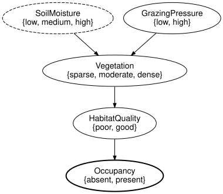
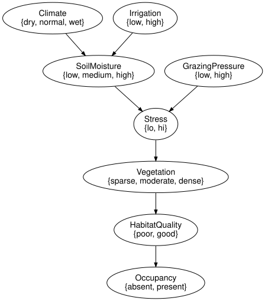

Open networks and composition
Simon Frost
- Overview
- Setup
- Splitting the reference network
- The typed-interface rule
- Sequential composition and gluing
- Tensor and undirected wiring diagrams
- Substitution
- Semantics of open networks: compositionality
- Structural composition, names and repeated ports
- Unrolling a dynamic network is gluing
- Summary
- References
Overview
An open Bayesian network is a network with an interface: some variables are inputs, provided by the environment, and some are outputs, offered to it. A network whose input variables carry no mechanism of their own is exactly a causal theory with free inputs (Fong 2012), and the interface is made precise as a structured cospan (Baez and Courser 2020), the same construction AlgebraicJulia uses for open dynamical and epidemiological systems (Libkind et al. 2022). Open networks compose by gluing outputs to inputs, and the semantics of the composite is the composite of the semantics: the kernel of A composed with B is the kernel of A composed with the kernel of B, and likewise for the tensor (Propositions 2 and 3 of the package specification). This vignette splits the reference habitat network into an abiotic and a biotic component, composes them back in several ways, refines a mechanism by substitution, and checks the propositions numerically.
Setup
using CategoricalBayesianNetworks
m = reference_habitat_model()
ref = reference_habitat_bn()
variable_names(ref)7-element Vector{Symbol}:
:Climate
:Irrigation
:SoilMoisture
:GrazingPressure
:Vegetation
:HabitatQuality
:OccupancySplitting the reference network
The abiotic component generates SoilMoisture from Climate and Irrigation; the biotic component reads SoilMoisture and generates GrazingPressure, Vegetation, HabitatQuality and Occupancy. In the biotic network SoilMoisture has no mechanism (closed = false leaves it exogenous).
abiotic = bayesnet(:Climate => [:dry, :normal, :wet], :Irrigation => [:low, :high],
:SoilMoisture => [:low, :medium, :high];
mechanisms = [:SoilMoisture => (:Climate, :Irrigation)])
biotic = bayesnet(:SoilMoisture => [:low, :medium, :high], :GrazingPressure => [:low, :high],
:Vegetation => [:sparse, :moderate, :dense], :HabitatQuality => [:poor, :good],
:Occupancy => [:absent, :present];
mechanisms = [:GrazingPressure => (),
:Vegetation => (:SoilMoisture, :GrazingPressure),
:HabitatQuality => :Vegetation,
:Occupancy => :HabitatQuality],
closed = false)
variable_name.(Ref(biotic), exogenous(biotic))1-element Vector{Symbol}:
:SoilMoistureOpen makes a network open by naming its inputs and outputs. The result is a Catlab structured cospan (Baez and Courser 2020): the apex is the network, the feet are VariableSpaces (the interface variables with their states) and the legs embed the feet into the apex.
A = Open(abiotic; outputs = [:SoilMoisture])
B = Open(biotic; inputs = [:SoilMoisture], outputs = [:Occupancy])
println(A)
println(B)OpenBayesNet(3 variables, 3 mechanisms; Symbol[] -> [:SoilMoisture])
OpenBayesNet(5 variables, 4 mechanisms; [:SoilMoisture] -> [:Occupancy])to_graphviz(B)
Inputs are drawn dashed and outputs bold. input_space(B) is the foot itself:
variable_names(input_space(B)), states(input_space(B), :SoilMoisture)([:SoilMoisture], [:low, :medium, :high])The typed-interface rule
Not every choice of interface is allowed. An open network must satisfy the typed-interface rule: input variables have no mechanism, the input leg is injective, every mechanism-free variable is an input, the apex is acyclic, and the legs preserve names, states and positions. Under this rule the pushouts behind composition never give a variable two mechanisms. Open checks the rule and rejects violations:
try
Open(abiotic; inputs = [:SoilMoisture]) # SoilMoisture has a mechanism
catch e
sprint(showerror, e)
end"InterfaceError: rule 1 (every input-foot variable has no mechanism in the apex) is violated by variable(s) SoilMoisture (ids 3)"try
Open(biotic; outputs = [:Occupancy]) # SoilMoisture is exogenous but not an input
catch e
sprint(showerror, e)
end"InterfaceError: rule 3 (every mechanism-free apex variable is an input) is violated by variable(s) SoilMoisture (ids 1)"Sequential composition and gluing
compose (or ⋅) is strict: the outputs of the first network must equal the inputs of the second, position by position, with the same states. The composite is the pushout of the two apexes along the shared interface.
C = compose(A, B)
inputs(C), outputs(C), sort(variable_names(apex(C)))(Symbol[], [:Occupancy], [:Climate, :GrazingPressure, :HabitatQuality, :Irrigation, :Occupancy, :SoilMoisture, :Vegetation])The composite has no free inputs and one output, and its apex is the reference network again – gluing the two halves along SoilMoisture recovers exactly what was split:
canonicalize(apex(C)) == canonicalize(ref)true(ref is the structure alone, reference_habitat_bn(); the apex of C carries the NoRef references of its components, whereas syntax(m) carries the NamedRefs that bind_cpt assigned, so the comparison is made on the structure.)
A mismatch is reported with the position and the two sides:
B2 = Open(rename_variable(biotic, :SoilMoisture => :Moisture);
inputs = [:Moisture], outputs = [:Occupancy])
try
compose(A, B2)
catch e
sprint(showerror, e)
end"InterfaceMismatchError: compose: outputs(A) vs inputs(B): interfaces differ in variable_name at position 1; left has :SoilMoisture, right has :Moisture"glue composes along explicit pairs of names, which may differ (the glued variable keeps the name from the first network), and leaves the other interface variables in place:
G = glue(A, B2; along = [:SoilMoisture => :Moisture])
canonicalize(apex(G)) == canonicalize(ref)trueTensor and undirected wiring diagrams
otimes (or ⊗) places networks side by side; the apex is the disjoint union and the interfaces are concatenated. Names may repeat, which is fine for the structure but prevents evaluation until variables are renamed.
T = otimes(A, A)
inputs(T), outputs(T), nparts(apex(T), :Variable)(Symbol[], [:SoilMoisture, :SoilMoisture], 6)oapply composes along an undirected wiring diagram written with @relation: each box receives a network, its ports are the interface variables (inputs first), and shared junctions are glued. The typed-interface rule cannot be expressed in an undirected diagram, so it is checked afterwards.
uwd = @relation (occ,) begin
abiotic(soil)
biotic(soil, occ)
end
R = oapply(uwd, Dict(:abiotic => A, :biotic => B))
outputs(R), canonicalize(apex(R)) == canonicalize(ref)([:Occupancy], true)Substitution
substitute replaces a mechanism by an open network with the same interface: the parents as inputs, in order, and the target as output. Here the Vegetation mechanism is refined into a two-step pathway through a hidden Stress variable.
two_step = bayesnet(:SoilMoisture => [:low, :medium, :high], :GrazingPressure => [:low, :high],
:Stress => [:lo, :hi], :Vegetation => [:sparse, :moderate, :dense];
mechanisms = [:Stress => (:SoilMoisture, :GrazingPressure),
:Vegetation => :Stress], closed = false)
N = Open(two_step; inputs = [:SoilMoisture, :GrazingPressure], outputs = [:Vegetation])
S = substitute(ref, :Vegetation_mechanism => N)
sort(variable_names(S)), mechanism_names(S)([:Climate, :GrazingPressure, :HabitatQuality, :Irrigation, :Occupancy, :SoilMoisture, :Stress, :Vegetation], [:SoilMoisture_mechanism, :GrazingPressure_mechanism, :HabitatQuality_mechanism, :Occupancy_mechanism, :Climate_mechanism, :Irrigation_mechanism, :Stress_mechanism, :Vegetation_mechanism])to_graphviz(S)
The same substitution can be done on the wiring diagram with Catlab’s substitute, and reading the result back gives the same network:
d = to_wiring_diagram(ref)
b = findfirst(i -> box(d, i).value.name == :Vegetation_mechanism, box_ids(d))
dS = substitute(d, b, to_wiring_diagram(N))
canonicalize(first(from_wiring_diagram(dS))) == canonicalize(S)trueOn a BayesModel the substitution is recorded in the history, and kernels for the new mechanisms are bound afterwards.
Semantics of open networks: compositionality
interpret gives the kernel ⊗ inputs → ⊗ outputs of an open network: the product of its mechanisms’ kernels, summed over the hidden variables. Kernels are looked up by KernelRef, which survives composition because it is an attribute of the apex; the components above were built without references, so we look kernels up by target name instead.
by_name = Dict(x => kernel(m, x) for x in variable_names(ref))
kA = interpret(A, by_name)
kB = interpret(B, by_name)
kA.codom, kB.dom, kB.codom(FiniteSpace(SoilMoisture{low,medium,high}), FiniteSpace(SoilMoisture{low,medium,high}), FiniteSpace(Occupancy{absent,present}))Sequential compositionality (Proposition 3 of the specification): the kernel of the composite is the composite of the kernels, so interpret is functorial.
interpret(compose(A, B), by_name) ≈ compose(kA, kB)trueTensor compositionality (Proposition 2): the kernel of the tensor is the tensor of the kernels, so interpret is monoidal as well.
interpret(otimes(A, B), by_name) ≈ otimes(kA, kB)trueAnd the composite agrees with the closed model’s own marginal, which is the reference evaluation of the previous vignette:
interpret(C, by_name) ≈ marginal(m, :Occupancy)trueStructural composition, names and repeated ports
Names are convenient lookup keys, not a criterion for whether two hidden components can coexist. compose retains its name-safe compatibility policy; compose_structural performs the total structural gluing on matching valid feet.
scalar = Open(bayesnet(:Hidden => [:no, :yes]))
try
compose(scalar, scalar)
catch e
sprint(showerror, e)
end"DuplicateNameError: 2 Variable parts named :Hidden (ids 1, 2)"two_hidden = compose_structural(scalar, scalar)
(variables = variable_names(apex(two_hidden)),
mechanisms = nparts(apex(two_hidden), :Mechanism),
valid = validate(two_hidden) === nothing)(variables = [:Hidden, :Hidden], mechanisms = 2, valid = true)Both mechanisms remain. A duplicate name is not an instruction to merge them or discard one. Use part ids, stable kernel references, or explicit renaming when subsequent APIs require unique names.
Ordered input occurrences also remain distinct even when they carry one variable:
repeated = bayesnet(:X => [:no, :yes], :Y => [:no, :yes];
mechanisms = [:Y => (:X, :X)])
same = zeros(2, 2, 2)
for i in 1:2, j in 1:2
same[i, j, i == j ? 2 : 1] = 1.0
end
rm = bind_cpt(BayesModel(repeated), [:X => [0.4, 0.6], :Y => same])
(slot_count = length(inputs(syntax(rm), mechanism_of(syntax(rm), :Y))),
copied_value = marginal(rm, :Y).table,
expression_agrees = categorical_joint(rm) ≈ joint_distribution(rm))(slot_count = 2, copied_value = [0.0, 1.0], expression_agrees = true)The factor representation takes the diagonal of the repeated-slot CPT. The free-expression builder supplies one copy per occurrence and retains a wire for the original variable. This is one draw used twice, not two independent draws. Port metadata survives the same representation boundary:
annotated = bayesnet(:Habitat => [:poor, :good];
space_refs = Dict(:Habitat => NamedRef("habitat-space")))
back = first(from_wiring_diagram(to_wiring_diagram(annotated)))
(reference = space_ref(back, :Habitat), round_trip = is_isomorphic(annotated, back))(reference = NamedRef("habitat-space"), round_trip = true)Unrolling a dynamic network is gluing
The same machinery explains what unroll does to a DynamicBayesNet. A dynamic template is an initial network and a transition network related by the lag naming convention; initial_slice is the initial network renamed to slice 0 and transition_slice(dbn, t) the transition template seen from slice t, with the lagged variables exogenous. Gluing the outputs of one slice to the inputs of the next is exactly what unroll produces, up to renumbering of parts.
dbn = vegetation_herbivore_dbn()
A_0 = Open(initial_slice(dbn); outputs = [:Vegetation_0, :Herbivores_0])
B_1 = Open(transition_slice(dbn, 1); inputs = [:Vegetation_0, :Herbivores_0],
outputs = [:Vegetation_1, :Herbivores_1])
G = glue(A_0, B_1;
along = [:Vegetation_0 => :Vegetation_0, :Herbivores_0 => :Herbivores_0])
canonicalize(apex(G)) == canonicalize(unroll(dbn, 1))trueunroll builds the network directly rather than by repeated pushouts, because that is faster and keeps the names predictable, but both test suites keep the two constructions in agreement. Dynamic networks are the subject of a vignette of BayesianNetworks.jl.
Summary
Open presents a network as a structured cospan, so composition is a pushout of ACSets rather than renaming by hand, and the typed-interface rule is the condition under which that pushout can never give one variable two mechanisms. compose, glue, otimes, oapply and substitute are all built from that one idea, and interpret sends each of them to the corresponding operation on finite stochastic kernels, which is what makes building a large model out of reviewed pieces safe; unrolling a dynamic network is one more instance of the same gluing. Serialisation and provenance, dynamic networks and model cards continue in BayesianNetworks.jl’s own vignettes.
References
Baez, John C., and Kenny Courser. 2020. “Structured Cospans.” Theory and Applications of Categories 35 (48): 1771–822.
Fong, Brendan. 2012. Causal Theories: A Categorical Perspective on Bayesian Networks. https://arxiv.org/abs/1301.6201.
Libkind, Sophie, Andrew Baas, Micah Halter, Evan Patterson, and James P. Fairbanks. 2022. “An Algebraic Framework for Structured Epidemic Modelling.” Philosophical Transactions of the Royal Society A 380 (2233): 20210309. https://doi.org/10.1098/rsta.2021.0309.